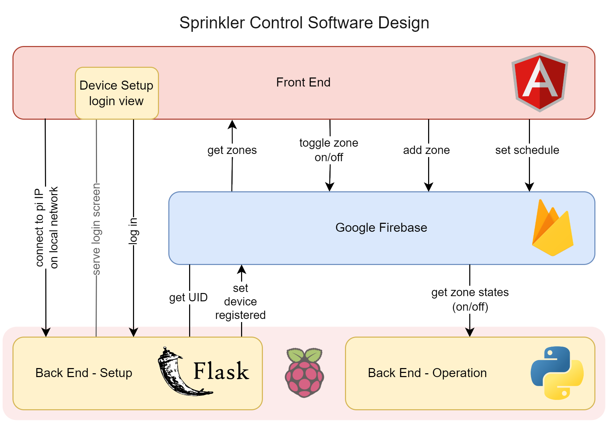

sprinkler control
IoT project featuring an Angular web application & a Raspberry Pi-controlled back-end for the wireless control of a home sprinkler system

Overview
This is an ongoing project! Since this is a personal project & development happens when I'm not otherwise occupied with work or school, it takes a while to add features.
The ultimate goal of this project is to make a smart sprinkler system that can change its behavior based on the weather forecast.
Right now the baseline functionality of the existing hardware sprinkler control system is being implemented.
System Design
Take a look at my system specification document for a set of requirements, design diagrams, & release benchmarks.
To avoid having an open internet-facing device on a home network (which could introduce security risks), a cloud database tracks the sprinkler system & the Raspberry Pi simply reads from this database

Login & Account Creation
The user either logs in or creates an account with their email. This creates a UID for the
user in Firebase Auth, which is used to reference the user
for all other applications of the system.
The user can view their zones on their dashboard. If the user is logging in for the first
time they will be directed to connect their Raspberry Pi. This only happens once.
Initial Connection
If the user has just logged in for the first time and has not registered their Raspberry Pi
they will be prompted to enter the Pi's IP address. Note this is the only time both devices
must be connected to the same network.
The user will be promped to log in. Once the device is registered, the user's UID is stored
on the Pi and the user can see their sprinkler zones on their dashboard.
Remote control
From any network, the user can control their sprinkler system remotely using the web app.
The user can set how many zones they have connected, and can toggle these zones on & off.
Note two zones cannot be on at once due to water pressure constraints.
GPIO Control
The user can control the sprinkler hardware connected to the Pi from anywhere (once I get
the web app hosted).
Surprisingly I didn't bring a home sprinkler system to college, so here's an LED stepping in
for Zone 1
to demo the GPIO signals.
Other Features
- Get that cat! If you want the neighbor cat out of your yard you can interrupt your current sprinkler schedule by pressing the Get That Cat! button & entering the zone you want to turn on. All other zones turn off.
- Grid or list view
- Zone scheduling (one-time, kind of like a timer that counts down. Repeat scheduling is under development)
Future Work
- In progress: schedule saving (creating a timing schedule & being able to save & reuse that schedule)
- In progress: secure login in initial device setup
- Map visualization (aerial image of yard with clickable zones to toggle)
- Implementation of weather API for automatic adjustment to watering schedule based on weather forecast
- Mobile app - using Capacitor to create iOS and Android app (Capacitor is one of the main reasons I used Angular for this project)